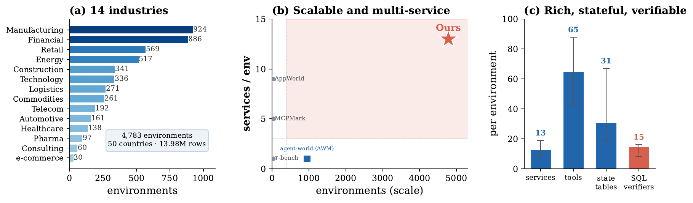
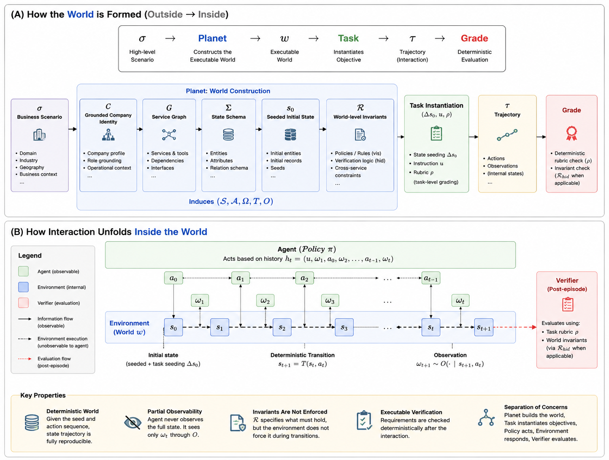
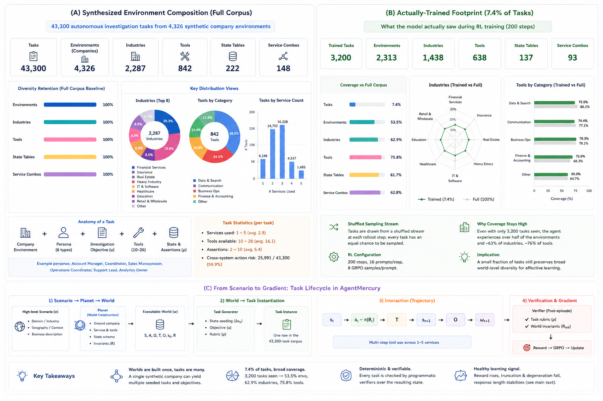
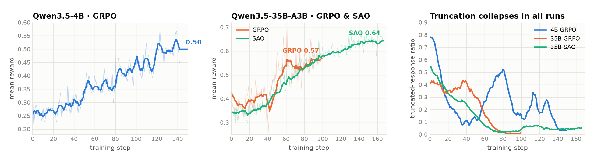
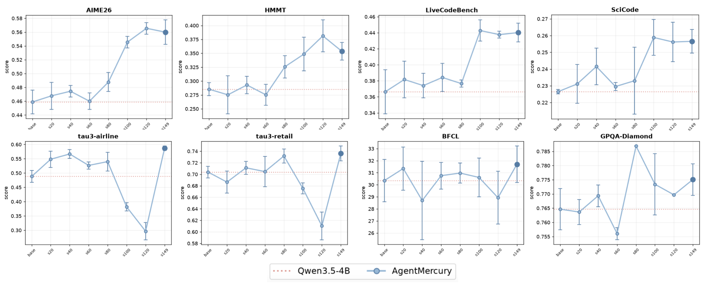

Home / Research Notes / AgentPlanet / AgentMercury
☿ AgentMercury
Your Agent Can Synthesize Verifiable Environments
for Business Scenarios at Scale
1Meridian Intelligence Global Inc. 2University of Massachusetts Amherst
60-second overview: how a business scenario becomes an executable world, how policies train inside it, and what transfers. All curves and numbers are from the actual runs.
A scenario σ is compiled by Planet into an executable world w; tasks (u, ρ) are instantiated from the world; a policy π produces a trajectory τ that is graded deterministically into a reward r.
Policy models learn to select actions; world models learn to predict subsequent states. Both depend on diverse, informative environments for training — yet environments are typically hand-built or synthesized around predefined tasks and benchmarks. This task-centric paradigm limits environments to what the target benchmark measures. AgentMercury flips the direction: it synthesizes executable environments from high-level business scenarios, making environment construction an explicit Planet role in the agent–environment system. Policies trained with RL inside these worlds show steadily improving rewards and transfer to established benchmarks spanning knowledge, reasoning, and tool use — despite the environments being built independently of every evaluation task. The construction traces themselves are learnable: a fine-tuned open model authors new valid worlds through code-level modifications, suggesting a scalable loop of environment generation and agent learning.

Planet receives only a scenario σ and emits a complete world specification w = ⟨S, A, Ω, T, O, s₀, R⟩, factorized as grounded company identity → service graph → state schema → seeded initial state → world-level invariants. Crucially, the invariants R are not enforced by the transition function — they are rendered as executable verification conditions (largely SQL over the world’s own database). The agent is responsible for satisfying cross-service requirements; the world only checks them afterwards. One world then serves many tasks: task instantiation seeds task-specific state Δs₀ and a rubric ρ on top of the shared world, and post-episode grading is deterministic and replayable.


We train Qwen3.5-4B and Qwen3.5-35B-A3B with RL (GRPO, and SAO as an alternative optimizer) directly in the synthesized environments — multi-turn MCP tool use against live business software, rewarded by the deterministic environment grader. Rewards improve steadily; the truncated-response ratio collapses; degenerate responses stay near zero. The improvement is progressive across checkpoints rather than a single-step jump.


In-domain (EnterpriseOps-Gym, 8 enterprise domains). Training on AgentMercury improves the 4B average from 12.3 to 15.7 (+27.6%, 7 of 8 domains) and the 35B-A3B average from 24.8 to 28.1 (GRPO) / 28.3 (SAO) — with SAO improving all eight domains. None of the evaluation environments were seen during training.
| Model | Teams | CSM | ITSM | Calendar | HR | Drive | Hybrid | Avg. | |
|---|---|---|---|---|---|---|---|---|---|
| GPT-5† | 26.3 | 36.4 | 49.0 | 18.9 | 41.3 | 17.9 | 34.0 | 23.5 | 30.9 |
| Gemini-2.5-Pro† | 39.3 | 11.6 | 31.1 | 13.9 | 12.5 | 4.9 | 27.0 | 19.6 | 19.9 |
| Kimi-K2-Thinking† | 30.0 | 7.1 | 51.0 | 12.2 | 15.4 | 8.2 | 39.6 | 15.7 | 22.4 |
| Qwen3.5-4B | 20.8 | 9.2 | 23.9 | 6.8 | 10.4 | 9.5 | 6.2 | 11.7 | 12.3 |
| + GRPO + Ours | 23.0 | 5.6 | 33.3 | 7.4 | 13.1 | 10.8 | 15.6 | 17.0 | 15.7 |
| Qwen3.5-35B-A3B | 33.9 | 7.6 | 53.2 | 14.6 | 18.6 | 11.4 | 35.9 | 23.5 | 24.8 |
| + GRPO + Ours | 39.8 | 11.1 | 53.8 | 15.6 | 21.9 | 17.7 | 41.2 | 23.7 | 28.1 |
| + SAO + Ours | 39.1 | 12.5 | 54.8 | 16.5 | 22.6 | 17.7 | 39.1 | 24.1 | 28.3 |
† reference numbers reported by EnterpriseOps-Gym. Ours: mean over three independent runs; s.d. in the paper.
Out-of-domain. The same policies improve on benchmarks the environments were never built for — math, coding, scientific computing, knowledge, and independent tool use:
| Model | AIME26 | HMMT | LCB v5–6 | SciCode | τ³-Airline | τ³-Retail | τ³-Telecom | BFCL | GPQA-D |
|---|---|---|---|---|---|---|---|---|---|
| Qwen3.5-4B | 45.9 | 28.5 | 36.6 | 22.6 | 48.8 | 70.4 | 92.5 | 30.3 | 76.5 |
| + GRPO + Ours | 56.0 +10.1 | 35.4 +6.9 | 44.0 +7.4 | 25.7 +3.1 | 58.7 +9.9 | 73.6 +3.2 | 91.9 −0.6 | 31.7 +1.4 | 77.5 +1.0 |
| Qwen3.5-35B-A3B | 91.0 | 77.0 | 74.3 | 29.7 | 39.1 | 52.7 | 49.1 | 31.1 | 82.8 |
| + GRPO + Ours | 91.9 | 80.0 | 79.0 +4.7 | 29.9 | 52.5 +13.4 | 57.1 +4.4 | 68.9 +19.8 | 42.5 +11.4 | 85.0 +2.2 |
| + SAO + Ours | 92.2 | 83.3 +6.3 | 78.6 | 28.3 | 50.9 +11.8 | 55.7 | 65.5 +16.4 | 42.1 +11.0 | 84.0 |
Mean over three independent evaluation runs (± s.d. in the paper). Beyond the means, the 35B policy becomes far more consistent: τ³-Telecom run-to-run s.d. shrinks from ±49.8 to ±20.5 after training.
Because AgentMercury exposes its construction traces — brief-to-world generation, intermediate-stage completion, validator-guided corruption repair, and intent-to-diff prediction — environment authoring itself becomes a learnable task with an executable oracle: a generated world counts only if it passes all 12 structural validators.
Prompting and learning turn out to be different levers: an in-context construction recipe helps the raw base model (3.3% → 20.0%) but collapses the fine-tuned one (83.3% → 10.0%) — once the procedure is internalized in the weights, the recipe interferes with it. Worlds train agents; trained agents can build new worlds. That closes a scalable loop between environment generation and agent learning.
@article{jeong2026agentmercury,
title = {AgentMercury: Your Agent Can Synthesize Verifiable Environments
for Business Scenarios at Scale},
author = {Jeong, Minbyul and Yoon, Chanwoong},
journal = {arXiv preprint},
year = {2026}
}
Last updated 2026-08-19.
Template based on Jon Barron's website.